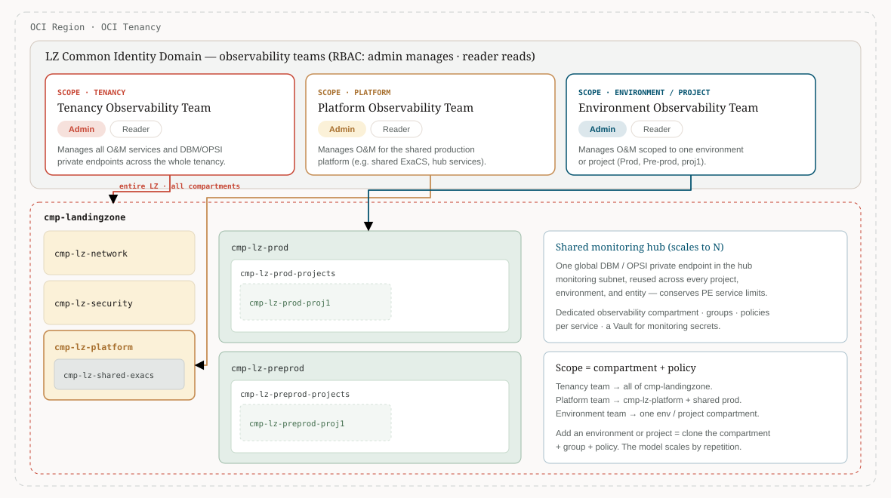

Enterprise observability on Oracle Cloud Infrastructure
From a bare tenancy to business reliability, in four moves.
A guided map of OCI Observability and Management. Pick your use case and follow the path from L0 to L4, enabling each service when your use case needs it.
An independent, community project — not an Oracle product. It exists to simplify understanding of Oracle's observability tools.
Pick your persona and your industry — we'll point you to the right levels, services, and lens, rather than starting from a product list. Access to every view shown here is governed by OCI IAM: each persona maps to an OCI Group with policies scoped to the right compartments.
I am a…
In…
Step 1 · Orient
Find the path for your use case
Choose the pattern that looks most like your estate. We will show where to start and the exact services to add, then dim everything else on the ladder so the route is clear.
Recommended path
—
Add these services, in order
· select any service to inspect it
Step 2 · Climb
The L0 to L4 ladder
Each level answers a sharper question than the last, from governance through classic observability to AI agents. Select any card to open the inspector, then switch lenses for an executive, architect, or practitioner view, with copy-ready snippets.
0
L0 · Govern and land
Foundation and guardrails
Is the platform ready to be observed safely?
Before a single metric flows, give observability a governed home — a dedicated compartment, least-privilege IAM, consistent tags, secrets in Vault, and tenancy-wide Audit.
1
L1 · See and alert
Foundation telemetry
Is it healthy, and what just happened?
Turn on the three native pillars — Monitoring, Logging, and Audit — plus the routing layer of Notifications and Events. Actionable alarms only, severity by business impact, and the right alert to the right channel.
2
L2 · Diagnose deep
Database and analysis depth
Why did it happen, and are we running out of room?
Make databases a first-class domain — Database Management for live diagnosis, Ops Insights for capacity and forecasting, Log Analytics for root-cause work, and the Management Agent for hybrid reach.
3
L3 · Correlate and automate
End-to-end and proactive
What is the business impact, and what can the platform handle on its own?
Stitch traces, logs, metrics, and database signals together with APM and OpenTelemetry, move data with Connector Hub, automate through Events, and layer on AI-assisted operations and forecasting.
4
L4 · Observe and govern AI agents
See, judge, and improve autonomous AI
Is the agent correct, grounded, safe, and getting better — and what can it do?
Agents are non-deterministic and drift silently, so they need more than the three pillars. Trace every reasoning step, judge output quality with a governed model, detect anomalies the SOC can read, and evolve under gated control — paired with Zero Trust enforcement and the OCI Secure AI Framework. See the deep dive below.
The collection layer
Choosing the right collection agent
Most telemetry reaches OCI through an agent. Three types cover the cases — pick by where the target runs and what it emits. Use the Oracle Cloud Agent whenever it fits; reach for the others for hybrid targets and custom logs.
Default · on OCI compute
Oracle Cloud Agent
Preinstalled on OCI compute instances and the recommended default whenever it fits.
Auth
Resource or instance principal
Collects
Host metrics to Monitoring, custom logs to Logging, and hosts the Management Agent plugin
Plugins
Run Command, Bastion, Vulnerability Scanning, Autonomous Linux, OS Management
Best practice when possible
Hybrid · OCI and external
Oracle Management Agent
Low-latency interactive collection between OCI and IT targets, including external and on-premises.
Standalone (zip / rpm) or as an Oracle Cloud Agent plugin; Helm chart for OKE
For hybrid and database targets
Custom logs · fluentd
Unified Monitoring Agent
Open-source, fluentd-based ingestion of custom logs into OCI Logging.
Auth
User principal
Collects
Syslog, application, and security logs to OCI Logging, then on to a SIEM via Connector Hub
Note
Does not parse Oracle database logs — raw records only
For custom log streams to SIEM
Source: "Demystifying logging and monitoring agent types in OCI Observability and Management" — Royce Fu, OCI Observability blog.
The AI layer · observe, judge, govern
AI agent observability and governance
Autonomous agents fail in non-obvious ways — a confident but wrong answer returns a normal status code. OCI answers this with three connected disciplines across the AI adoption lifecycle.
"Zero Trust decides what an agent is allowed to do. Observability tells you what it actually did — and whether it is getting better or worse. You need both."
OCI SAIF · framework
Secure AI Framework
The umbrella. Secures three surfaces — models, data, and agents — with six principles across the adoption lifecycle. Ships through the Enterprise Landing Zone as policy-as-code.
Defines what is securedZero Trust for AI agents · enforcement
Authorize every action
The agent execution trust boundary. A policy gate and broker scope identity, allow-list tools, and authorize each action at the moment it happens — producing a decision ledger.
Decides what an agent may doAI observability · detect and evaluate
See, judge, improve
The detective and evaluative half. Trace agent behaviour, judge it with LLM-as-a-judge, detect drift, and evolve under gated control. The decision ledger becomes a primary data source.
Tells you what it actually did
SeeJudgeImprove under controlTighten Zero Trust
A new modern diagram
The OCI AI observability reference architecture
One OpenTelemetry instrumentation feeds OCI Observability and Management and an open-source stack, then evaluation and action. Select any service to inspect it.
Instrument
OpenTelemetry GenAI conventions
Agent, tools, and brokerZero Trust decision ledger
Collect
Redact and route
OpenTelemetry Collector
Analyse
OCI O&M + open source
Grafana · Prometheus · Tempo · Loki
Evaluate
LLM-as-a-judge
Act
Gate, govern, alert
Tighten Zero Trust policy
The pipeline ends in action, not a dashboard — evaluation results and detected drift flow into the controlled-evolution loop and back into Zero Trust policy. Based on the OCI AI Observability for Agents whitepaper.
Persona view
How each persona identifies and uses the data
The same observability estate looks different to each role. Here is what each persona recognises, what they do with it, and the levels they live in.
Access is governed by OCI IAM.
These views and rights are not ad hoc — each persona maps to an OCI Group with policies scoped to the right compartments. The pattern is two levels per scope: an admin group that manages the services, and a reader group with read-only access for monitoring and reporting. The groups live in the Landing Zone Common Identity Domain. See the scoping model below.
L5 · custom build, not out of the box
Multitenancy and observability at scale
The multitenant approach is not just access scoping. The real model is centralized aggregation: forward telemetry from every tenant and every cloud into a central OCI Log Analytics, correlate it by a common key, and analyse it with machine learning and GenAI — while keeping each tenant isolated by compartment and IAM. Cross-tenancy collection is not automatic — it relies on per-source forwarding plus IAM cross-tenancy policies. This is a custom build on the native services for operators running OCI Alloy, Dedicated Region (DRCC), or a multitenant ISV / SaaS platform.
Collect from everywhere → aggregate in OCI Log Analytics → analyse with ML and GenAI → operate one fleet view, with per-tenant isolation by compartment and IAM.
OCI Log Analytics ingests from OCI, on-premises, AWS, Azure, Google Cloud, and SaaS — 250+ out-of-the-box sources, tiered active-plus-archive storage, ML clustering and link analysis, detection rules, and GenAI-assisted analytics. Kubernetes: OKE and AWS EKS are documented via the Helm chart; OCI Functions bridges data (it processes and forwards, rather than collecting natively).
Isolation and RBAC
Per-tenant boundaries, by compartment and IAM
Within each tenancy, access is scoped by compartment and IAM — Tenancy, Platform, and Environment / Project observability teams, each an admin and a reader OCI group. Adding a tenant, environment, or project is repetition: clone the compartment, group, and policy.

Scope = compartment + policy. Three observability teams (Tenancy · Platform · Environment), each with an admin and a reader OCI group, mapped to the Landing Zone compartments.Reference: OCI Database Observability — official LZ add-on (obs_v2)
Scales by repetitionCompartment→Environment→Project→Tenant→Operator fleet
Design considerations at scale
What a real multitenant design must pin down
Cross-tenancy aggregation
Pick a host tenancy and source tenancies; route via Service Connector Hub, Streaming, or Object Storage; and grant the IAM cross-tenancy Define / Endorse / Admit policies. It is not automatic.
Isolation model
A log group and compartment per tenant — access control rides on compartment-scoped log groups, not on a shared tenant_id field alone.
Agent trust
Management Agent install keys per target tenancy and namespace, secrets in Vault, key rotation, and Management Gateway or private egress for hybrid sources.
Network & security
Private endpoints and Service Gateway where applicable, Zero Trust Packet Routing and segmentation, and an audit trail of operator access.
Region & data residency
Log Analytics is regional. Cross-tenancy sharing requires source and target tenancies subscribed to the same regions; honour residency boundaries.
Capacity & cost
Plan ingest volume, active and archive retention, recall cost, Connector Hub delivery semantics, duplicate handling, and service limits.
Best practices at scale
Five steps that make it work
Establish a common correlation key. A business identifier (transaction ID, ECID, order ID) carried across logs, metrics, and traces — the anchor for cross-system correlation.
Centralize all log sources. Ingest into Log Analytics through Service Connector Hub and Management Agents; normalize with consistent timestamping and tagging.
Create correlated dashboards. Use-case-focused views (audit, security, performance) that overlay logs, metrics, and traces with drill-down by the correlation key.
Automate alerts and anomaly detection. Pattern-based alerts plus ML anomaly detection on volumes, durations, and access patterns, wired to Events for response.
Embed observability into the design. Make log tagging and context propagation part of every new integration — a business enabler, not a post-deployment add-on.
The ladder maps cleanly onto an observability maturity model. Find your current state, and the next column is your next move.
L0
Govern and land
Tenancy and Landing Zone exist, with little to no governed telemetry. Monitoring is ad hoc or absent.
maps to · pre-Level 1
L1
See and alert
Infrastructure metrics, central logging, basic alarms, and notification standards. Troubleshooting is manual.
maps to · Level 1 to 2
L2
Diagnose deep
Database performance monitoring, SQL diagnostics, capacity forecasting, and log analytics are in play.
maps to · Level 3
L3
Correlate and automate
Distributed tracing, telemetry correlation, anomaly detection, automated remediation, and service SLOs.
maps to · Level 4 to 5
Learn more
Hands-on guides, demos, and articles
Curated from the Oracle DevRel technology-engineering observability library, the OCI Observability blog, and team publications. Open any service in the ladder to see the relevant links inline.
Reference implementation
See it working — the OCTO observability demo
The OCI AI Observability for Agents whitepaper cites this as its worked example. A multi-service drone-retail stack where every browser click, FastAPI request, Spring Boot span, and Oracle ATP query share one trace context — and a GenAI multi-agent workflow traced end to end into OCI APM and Langfuse. Deploy in 5–10 minutes with OCI Resource Manager.

![Multitenant observability at scale: per-tenant multicloud sources (OCI, Oracle Database@Azure, AWS, GCP, on-premises, Fusion SaaS, OKE) are collected by Management Agent, Service Connector Hub, Streaming and Object Storage, Functions, FluentD/Fluent-Bit/OpenTelemetry and direct upload, aggregated into a central OCI Log Analytics that ingests 300-plus sources, clusters and correlates with link analysis and detection rules and tiered storage and LoganAI, and is surfaced to an operator cross-tenant fleet view, dashboards, alarms, and per-tenant views — with per-tenant isolation by compartment and IAM.](assets/diagrams/observability-multitenant.svg)